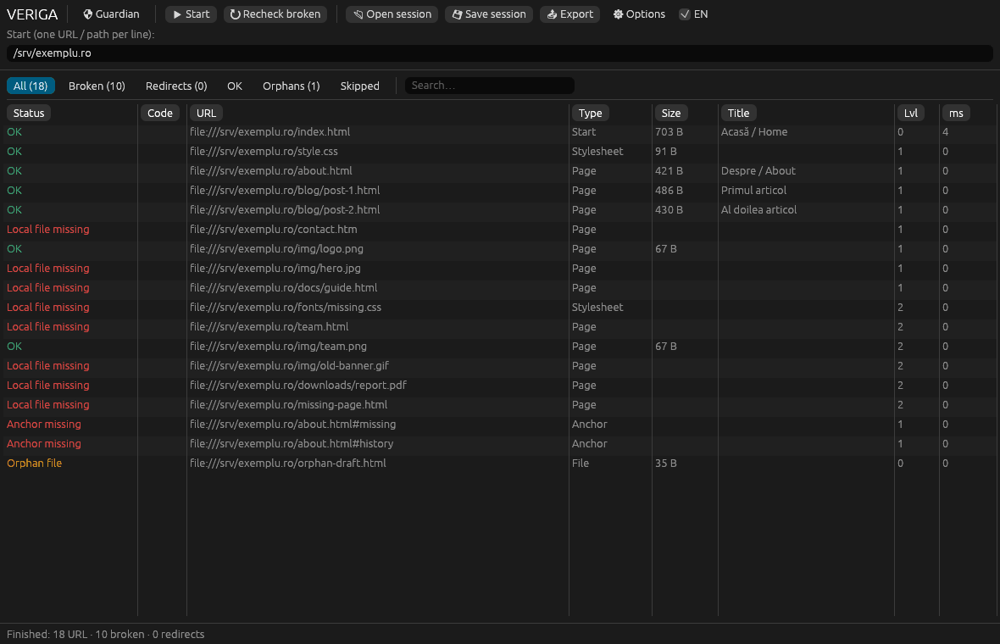

Verificator de legături · Rust · implementare independentă
VERIGA
Un site este un lanț. Când o legătură cedează, cititorii ajung în gol. VERIGA găsește fiecare verigă ruptă, propune reparația, o verifică live și o aplică numai cu copie de siguranță și cale de întoarcere.
8ținte în CI: Linux, Windows, macOS, x86-64 și ARM64
0conturi, cookie-uri de urmărire sau servicii externe
48teste Rust automate, plus audit de accesibilitate și de securitate
01 · Demonstrație
Repară un site, veriga cu veriga
Rezultatul unei verificări pe un site de exemplu. Alege un rând, citește propunerea și aplic-o. Fișierul sursă din dreapta se schimbă, iar orice modificare poate fi anulată.
exemplu.ro · 10 legături
Propunere
pagina-principala.html
Date de exemplu, simulate în pagină. Aplicația reală verifică adresele pe rețea, respectă robots.txt și scrie în fișierele tale.
02 · Aplicația
Aplicație nativă, pe desktopul tău
Interfața grafică nativă pentru Windows, macOS și Linux: tabel sortabil, panou de detalii, filtre și Guardian. Fără browser, fără cont, fără urmărire.
VERIGA

03 · Tutoriale
Tutoriale video, subtitrate în 8 limbi
Zece tutoriale scurte înregistrate pe aplicația reală: de la prima verificare la Guardian, linia de comandă, varianta HTML și ediția portabilă. Subtitrările urmează limba paginii; poți schimba pista din player.
Fără sunet: explicațiile sunt în subtitrări. Fișierele .mp4 conțin toate cele 8 piste de subtitrare, iar fișierele .vtt sunt alăturate.
04 · Funcții
Tot ce face un verificator serios, și încă ceva
Implementare independentă, cu funcții comparabile cu Xenu Link Sleuth, extinsă cu funcțiile pluginului Trade-Free Link Guardian: reparare, jurnal, anulare și rulări programate.
PARCURGE
Pagini, imagini, CSS, scripturi, cadre, media, e-mail, FTP și ancore
Site online sau director local, cu fișiere orfane și diferențe de majuscule
HTTP/2, reîncercări cu Retry-After, lanțuri de redirecționări
robots.txt conform RFC 9309 (cu o abatere: un robots.txt cu 5xx nu oprește verificarea) și pornire din sitemap
403 nu înseamnă rupt: se marchează pentru revizuire
Hărți de site .xml.gz, rel=nofollow, scheme tel:/geo:/data:, antete Link, canonical și hreflang (opțional)
Lanț „fără frontiere”: citește și scrie plicuri FFF (citation/csl), cu DOI-uri verificate
REPARĂ
Reguli locale: schemă greșită, URL lipit, parametri de urmărire, http spre https
Redirecționări permanente verificate pe aceeași resursă, cu respingerea soft-404
Surse HTML, Markdown, export WordPress (WXR) și sitemap
Copie de siguranță, scriere atomică, jurnal și anulare pe poziție, context sau text unic
Dezleagă linkul sau caută arhiva în Wayback Machine, la cerere
PRIVEȘTE
Rapoarte HTML, CSV, TSV, JSON, text și sitemap
Domenii, hartă de sănătate, arbore, tendințe și conformitate
Jurnal 404 cu sugestii și reguli .htaccess
Deriva între verificări: legături noi, rezolvate și titluri H1 schimbate
Rulări programate cu notificare prin webhook sau e-mail
Verificări opționale: conținut mixt, SRI, expirarea certificatelor, fluxuri RSS/Atom, nume de link ambigue
Ieșiri SARIF 2.1.0 și JUnit XML pentru CI
Linux x86-64Linux ARM64Linux musl (static)Windows x86-64Windows ARM64macOS IntelmacOS Apple SiliconDocker scratchHTML single-file
05 · Securitate
Un instrument care citește internetul nu are voie să-l creadă
Codul a trecut printr-un audit adversarial: am atacat propriul program, am scris testele care pică, apoi le-am reparat. Iată ce nu mai merge împotriva lui.
RFC 9309robots.txt, 5xx nu mai ascunde un site căzut
WCAG 2.2 AAaxe-core: 0 încălcări, temă clară și întunecată
RUST 2024clippy strict, peste 80 de teste, cargo-audit curat
CSPcu hash în pagină și în rapoartele exportate
Limite cunoscute, scrise în README: rebinding DNS nu este închis complet, HTML escapat în exporturile WordPress nu este scanat, iar varianta web este limitată de CORS.
Un site public te trimite spre rețeaua ta internă
Apărare:adresele private și locale sunt blocate implicit, inclusiv după redirecționare (anti-SSRF). Se permit explicit cu --allow-private.
Parola ta ajunge la alt server printr-un redirect
Apărare:Authorization, Cookie și cheile API se trimit doar către originea internă, niciodată către alte gazde.
Un server ostil îți strecoară cod în fișiere
Apărare:un URL nou cu ghilimele, paranteze unghiulare, spații, backtick sau backslash este refuzat înainte de scriere, în Rust și în varianta web.
Fișierul se schimbă în timp ce îl repari
Apărare:conținutul se recitește chiar înainte de scriere; o propunere depășită este abandonată, nu aplicată pe o poziție greșită. Scrierea este atomică, păstrează permisiunile și symlink-urile.
Un titlu de pagină devine formulă în Excel
Apărare:exporturile CSV neutralizează celulele care încep cu =, +, - sau @.
O sesiune importată conține HTML ostil
Apărare:tot ce vine dintr-o sesiune sau dintr-un jurnal importat este escapat, iar CSP-ul cu hash blochează orice script neprevăzut.
06 · Descarcă
Descărcări directe, versiunea 1.3.2
Binare gata de rulat, fără instalator și fără cont. Alege sistemul tău; fiecare fișier se descarcă direct de pe GitHub Releases.
Interfața grafică a fost exersată interactiv doar pe Linux; versiunile pentru Windows și macOS sunt produse și testate automat de CI, dar nu au fost încercate manual.
07 · Instalare
Pornește în două minute
Descarcă binarele de mai sus sau compilează din sursă. Varianta HTML nu are nevoie de nimic: deschizi fișierul în browser.